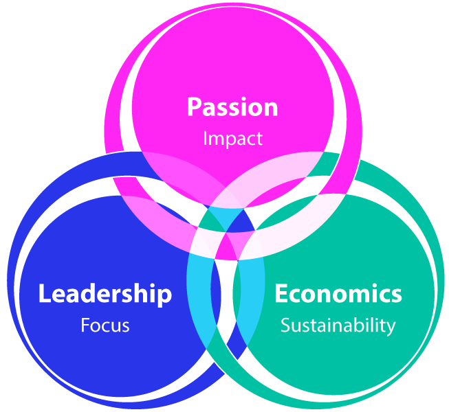

About Us
CropData's Agriculture E-Marketplace allows farmers to connect directly with buyers with the primary focus on Neutrality. CropData platform provides a range of unique features and services to establish and reinforce trust in its neutral position.
- Granular data collection, and analytics for verification and monitoring of farmers and farms.
- Rolling crop condition verification and reporting using dynamic crop calendars, based on ground-truthing, weather correlations, and seasonal calendars.
- Last-mile interface for hand-holding of the farmers.
- Bundled services with complete transparency and traceability in the Blockchain environment.
- Workflow-based task allocation, data collection, and logistics management.
- Mathematical aggregation of small farmers into large lots.
- Straight-through processing of transactions with Escrow-based money management.
- Ecosystem for essential value-added services through third-party aggregators.
- End-to-end counterparty risk monitoring and management.
Guiding Principles

Our Mission
CropData is on a mission to impact the lives of the small & marginal farmers, increasing their income and managing their core risks, by providing access to customized knowledge, fair markets, and essential services.
Our Vision
CropData intends to be the leader in the agriculture forwards marketplace for unprocessed crops and focuses on areas that make its model economically viable and self-sustaining.